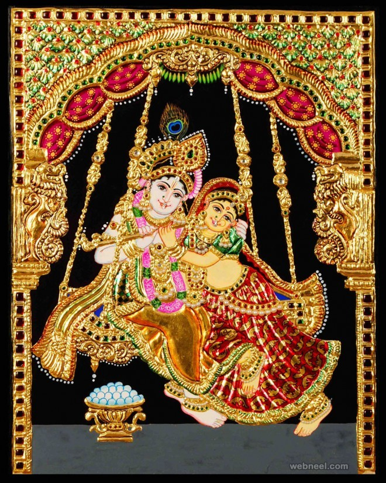
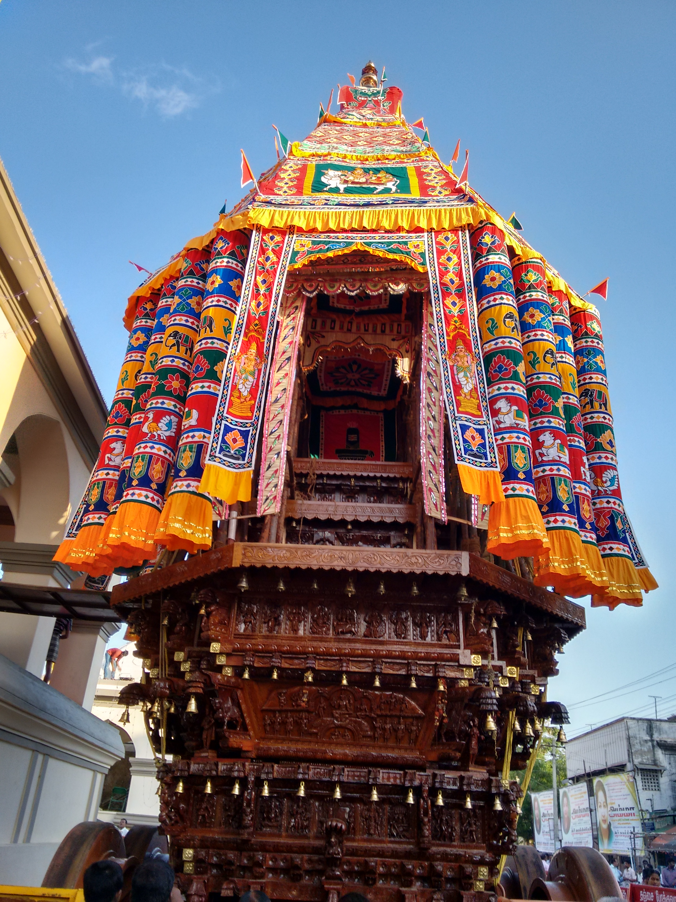

Gallery

Tanjore Splendor
R. Suganthi
A traditional Tanjore painting featuring Lord Krishna in vibrant colors and gold foil accents, showcasing the rich devotional art style of Tamil Nadu.

Kathakali in Motion
Ajith Menon
A striking portrayal of a Kathakali dancer in full costume and green makeup, captured mid-performance, symbolizing Kerala's classical theatrical beauty.
Veena Melodies
Latha Subramaniam
A serene artwork of a woman playing the Veena, representing Carnatic music and the cultural harmony of South Indian classical arts.

Temple Car Festival
Vigneshwar Rao
A vibrant depiction of a Rath Yatra (Theru festival) in Tamil Nadu, with crowds pulling the decorated temple chariot through narrow streets.